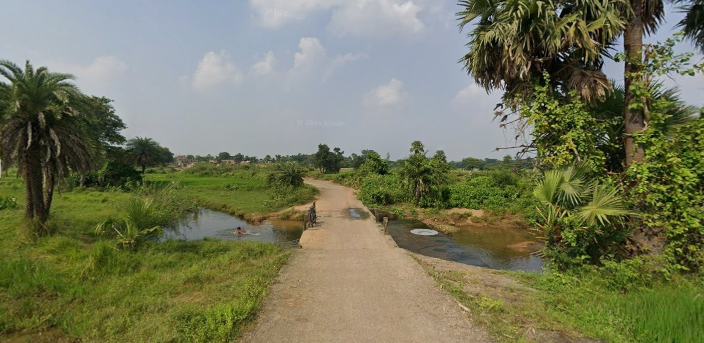
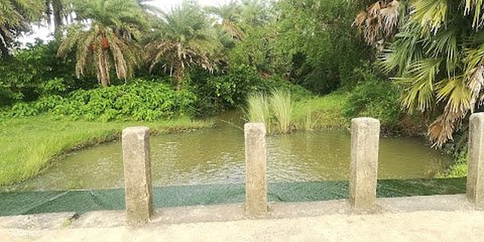

At a glance
Where the bridge is
- District
- Bankura
- State
- West BengalIndia
- Locality
- Sitladihi
- Coordinates
- 23.2643° N87.0666° E
- Water
- Flows acrossFrom the upper side over the bridge, then down below
Distance from Bankura
How far from Bankura?
3.6km
In a straight line from the centre of Bankura town. The bridge lies to the north of the town.
By road the distance will be a little longer than this. Use the button below for the exact route and travel time in Google Maps.
The centre of Bankura is taken as roughly 23.232° N, 87.072° E. This is a straight-line estimate, so the road distance will differ.
Photos
Scroll to open each photo
Each picture starts small and grows to full size as you scroll. Then the next one follows.


Around the bridge
What you see here
Narrow concrete bridge
A single-lane crossing with short concrete posts along both edges.
Water across the bridge
Water from the upper side runs across the bridge and spills down to the lower side.
Palm groves
Dense fan palms on the left of the road and date palms standing on the right.
Open paddy fields
Green fields beyond the bridge, with a line of trees and village houses in the distance.